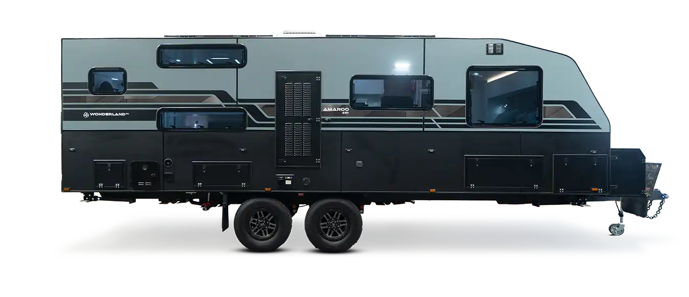
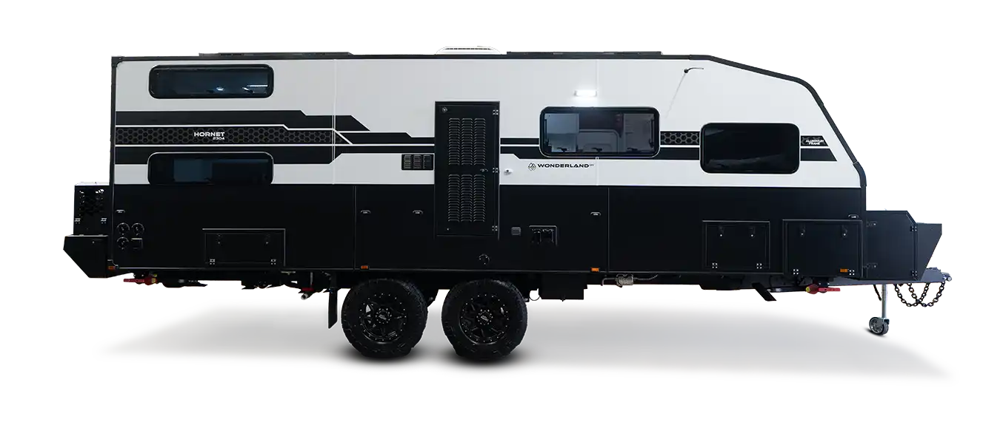
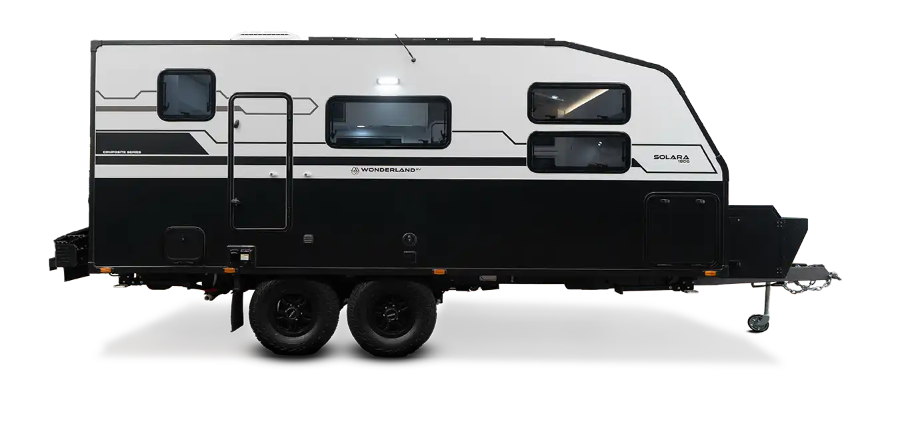
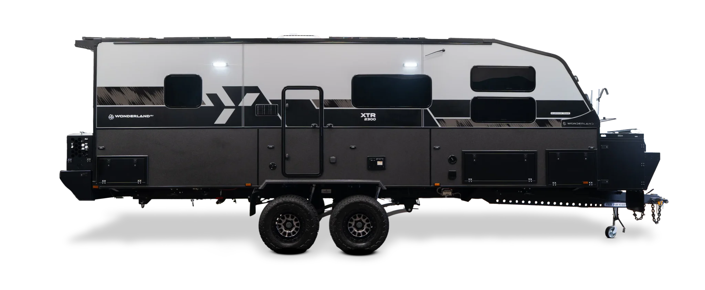

Four models and loads of customisations mean you can Wonderland RV your way.
17’05” to 24′ single and tandem axles
Up to 6 bunk beds for big families
30+ couple and family layouts




Geared for off-road adventures, allowing you to venture off the beaten track.
Designed for performance and liveability in Australia’s harshest terrain.
Wonderland’s first off-road composite caravan. Built tough, without compromising on creature comforts.
The ultimate off-road caravan, fully loaded with every imaginable luxury.